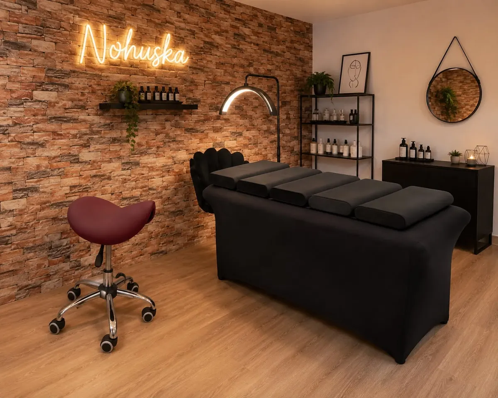

Click Lash · Pelo a pelo · Volumen
Extensiones de pestañas en Granollers
Pelo a pelo: 55 € · Volumen: 60 € · Click Lash: 35 €. Añadimos fibras con un diseño adaptado a tu pestaña natural. La primera puesta de pelo a pelo o volumen dura alrededor de 90 minutos; Click Lash, unos 30 minutos. Mantenimiento y retirada son servicios separados.

Tu elección se incluirá en los botones de consulta por WhatsApp de esta página.
Click Lash: cita de 30 minutos y duración orientativa
Una opción de colocación profesional para preparar una fecha o probar otro acabado. La cita dura aproximadamente 30 minutos y el resultado está pensado para unas dos semanas, según la conservación y los cuidados. Son tiempos distintos: media hora es la sesión; dos semanas es una orientación del resultado, no una garantía.
Click Lash y pelo a pelo son alternativas: no necesitas hacer una antes que la otra. Click Lash cuesta 35 €. Consulta las indicaciones de cuidado y retirada antes de reservar; no apliques automáticamente las de otro sistema.
Extensiones pelo a pelo por 55 €: diseño y mantenimiento
Colocamos las fibras individualmente sobre pestañas aptas. Elegimos longitud, curvatura y densidad según tu pestaña natural, la forma del ojo y el acabado que buscas. Un efecto discreto también necesita una selección proporcionada de fibras.
La tarifa del servicio de extensiones pelo a pelo es de 55 €. Antes de confirmar acordamos el diseño y el tiempo de cita. Si ya llevas extensiones, indícalo: una revisión, un relleno o una retirada no son automáticamente el mismo servicio ni tienen por qué tener esa tarifa.
La pestaña natural se renueva y el conjunto cambia con ella. Por eso hablamos de limpieza, mantenimiento y retirada antes de decidir. El tiempo orientativo de Click Lash no se utiliza como duración ni calendario de relleno del pelo a pelo.
Extensiones de volumen por 60 €: Fox Eye, Cat Eye, Anime y Medusa
En el volumen colocamos pequeños abanicos de fibras finas sobre cada pestaña natural apta, para conseguir más densidad que con el pelo a pelo. El estilo depende de cómo repartimos longitudes y curvaturas:
- Fox Eye: las fibras más largas se concentran hacia el extremo exterior para alargar y elevar la mirada.
- Cat Eye: la longitud aumenta de forma progresiva hacia fuera, con un acabado rasgado más suave que el Fox Eye.
- Anime: combina picos marcados y separados con una base más ligera, un efecto de pestaña de dibujo.
- Medusa: un acabado con mucho movimiento y picos; te enseñamos referencias en la consulta para acordar intensidad.
La tarifa de volumen es de 60 € en cualquier estilo, con una primera puesta de alrededor de 1 h 30 min. El relleno cuesta 45 € y la retirada 15 €. No todos los estilos encajan con todas las pestañas: si tu pestaña natural es fina o corta, te propondremos una versión más ligera para no sobrecargarla.
Consultar volumen y estilosCompara Click Lash, pelo a pelo y volumen antes de reservar
| Servicio | Qué buscas | Precio y cita |
|---|---|---|
| Click Lash | Una colocación profesional con duración orientativa del resultado de unas dos semanas; no es el calendario de relleno de las extensiones. | 35 € · unos 30 minutos |
| Pelo a pelo | Fibras individuales, con longitud y curvatura elegidas según tu pestaña natural y el efecto acordado. | 55 € · primera puesta alrededor de 90 minutos |
| Volumen | Más densidad mediante abanicos de fibras finas; estilos Fox Eye, Cat Eye, Anime o Medusa según valoración. | 60 € · primera puesta alrededor de 90 minutos |
Primera puesta, relleno y retirada son citas distintas. El relleno cuesta 45 € y la retirada 15 €. Si ya llevas extensiones, valoramos el estado y la conservación antes de confirmar qué servicio necesitas; no suponemos que cualquier conjunto admite relleno.
Si prefieres trabajar tu propia pestaña sin añadir fibras, compara el lifting coreano con tinte. No necesitas realizar Click Lash antes de elegir pelo a pelo o volumen.
Valoramos tus pestañas antes de elegir.
Revisamos longitud, dirección, resistencia, sensibilidad y tratamientos recientes. Así podemos recomendar Click Lash, pelo a pelo, volumen o lifting sin aplicar el mismo diseño a todas.
Si también quieres ordenar las cejas, puedes valorar Nohuska Korean Gaze™.
Consulta precio y cita antes de desplazarte
Para orientarte desde Granollers o el Vallès Oriental, indica Click Lash, pelo a pelo o volumen, fecha aproximada y si ya llevas extensiones. Confirmaremos qué servicio necesitas, presupuesto, tiempo de cita y disponibilidad antes de que organices la visita.
Una consulta por WhatsApp no confirma por sí sola una reserva: acordaremos contigo el tratamiento y la fecha.
Consultar por WhatsAppAntes y después de tu cita
Prepara la consulta y el cuidado en casa.
- Indica si ya llevas extensiones, cuándo se colocaron y si te has realizado un lifting o tinte recientemente.
- Comenta cualquier sensibilidad o molestia antes de confirmar y pregunta cómo acudir a la sesión.
- Antes de irte, pide que revisemos contigo la limpieza y los productos compatibles con la colocación realizada.
- Confirma cuándo valorar mantenimiento o retirada; no tires de las fibras para retirarlas en casa.
No aplicamos por defecto los mismos cuidados ni el mismo tiempo de uso a Click Lash y pelo a pelo. También puedes comparar lifting y extensiones si todavía no sabes si quieres añadir fibras.
Preguntas sobre Click Lash y extensiones
¿Realizáis Click Lash en Granollers?
Sí. Consulta disponibilidad, fecha y acabado por WhatsApp antes de reservar.
¿Qué diferencia hay entre Click Lash y pelo a pelo?
Son opciones distintas de colocación. Para Click Lash confirmamos el sistema aplicado, el tiempo previsto de uso y la retirada antes de reservar. En pelo a pelo diseñamos fibra a fibra según tu pestaña y el efecto buscado, con mantenimiento propio.
¿Qué opciones de pestañas postizas ofrecéis en Granollers?
En Nohuska ofrecemos Click Lash, extensiones pelo a pelo (clásicas) y extensiones de volumen con estilos como Fox Eye, Cat Eye, Anime o Medusa. Valoramos tu pestaña natural y el acabado que buscas antes de elegir.
¿Cuánto cuestan las extensiones y cuánto dura la cita?
Pelo a pelo: 55 €. Volumen (cualquier estilo): 60 €. Relleno: 45 €. Retirada: 15 €. Click Lash: 35 €, con una cita de unos 30 minutos. La primera puesta dura alrededor de 1 h 30 min. Confirmamos el tiempo de cita y, si ya llevas extensiones, si necesitas mantenimiento o retirada y su presupuesto.
¿Cuánto dura Click Lash?
La colocación dura aproximadamente 30 minutos. El resultado tiene una duración orientativa de unas dos semanas, según la conservación y los cuidados; no es una garantía ni el intervalo de mantenimiento del pelo a pelo.
¿Puedo elegir un efecto natural?
Sí. La intensidad se adapta a tus pestañas, a la forma de tus ojos y al resultado que buscas.
¿Puedo venir si ya llevo extensiones?
Indícalo antes de reservar y cuéntanos cuándo se colocaron y cómo están. Valoramos si corresponde mantenimiento, retirada o una nueva colocación antes de confirmar el servicio.
¿Cada cuánto se mantienen las extensiones pelo a pelo?
No fijamos el mismo intervalo para todas. La renovación de tu pestaña natural, la conservación del conjunto y los cuidados determinan cuándo valorar mantenimiento o retirada.
¿Cómo se retira Click Lash?
Antes de la colocación confirmamos las indicaciones de retirada para la opción aplicada. No tires de las fibras ni utilices las instrucciones de otro sistema de pestañas.
¿También ofrecéis lifting?
Sí. Si prefieres no añadir fibras, consulta el lifting coreano con tinte vegano.
¿Dónde se realiza?
En Nohuska Beauty Lab, Avinguda Sant Esteve, 40, 08402 Granollers, con cita previa.
Otros tratamientos de mirada
Una consulta por WhatsApp no confirma una reserva. Acordaremos contigo el tratamiento, la fecha y la hora.
Elige tu diseño de pestañas.
¿Buscas longitud y densidad con fibras añadidas? Compara Click Lash por 35 €, pelo a pelo por 55 € y volumen por 60 €, con sus cuidados y mantenimiento. Si prefieres trabajar tu pestaña natural, pregunta por lifting o tinte. Te orientaremos antes de elegir y confirmar disponibilidad.